PowerShell使用教程
一、说明
1.1 背景说明
个人对PowerShell也不是很熟悉，开始的时候就突然看到开始菜单中多了个叫PowerShell的文件夹，后来一点就看到某个教程视频说PowerShell很厉害但也没怎么听，再后来就看到kali也有了一些PowerShell的脚本这才意识到PowerShell应该确实有独到之处而且正在逐渐受到认可，不过我使用PowerShell是不久前网上看到篇文章说PowerShell可以算数所以常当个计算器使用。直到昨天看了《Windows PowerShell实战指南》才算有了比较完整的了解。
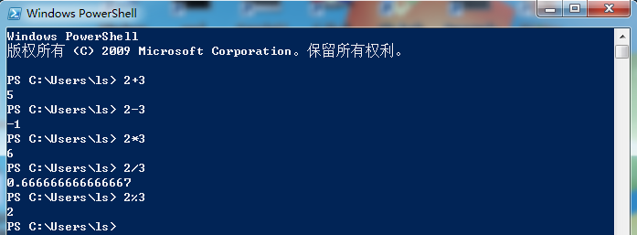
1.2 PowerShell是什么
很多人上来就什么基于.Net强无敌，首先作为用户我不关心你是什么技术，我首先想知道的是你提供的是什么东西、怎么用。
PowerShell，从名字可以知道，他首先是一个shell，shell的意思就是和Linux的bash等一样、和原来的cmd一样就是在里边敲命令（可执行文件）使用；
而Power就意味他是一个功能强大的shell，从面向用户而言，个人觉得其功能强大体现在以下几方面：
（1） 微软态度。微软是真正的在推行PowerShell，包括Office等更多自家软件，底层都是调用PowerShell来实现。
（2） 兼容性cmd。PowerShell包含原先cmd的所有命令，原先命令使用形式不变，在是在其基础上添加命令。
（3） 对标Linux。PowerShell使用了Linux Shell的思想，也就是所有的系统操作、配置，都可以在shell中敲写命令实现。
（4） 统一的命令格式和自包含的文档。基于前3点我们即可以说PowerShell已可与Linux Bash等一较高下，如果再加上后发优势那就可以让人相信PowerShell可以成功。对于bash等shell你觉得最大的缺点是什么？从我角度而言我觉得是成本很高，最开始是我不知道用什么命令不太记得使用什么命令我需要百度一下，二是我经常忘记命令参数格式怎么写要在良莠不齐的网上百度半天（man手册？对不起我真的经常没看懂，我博客之前写了不少关于shell命令的文章就是备忘用，网上那么多关于shell命令的文章也说明不是因为我特别蠢）。而这就是PowerShell的两个优点：第一点是PowerShell所有命令使用统一的cmdlet命令格式（也就是“动词-名词”的格式，比如get-process）会使人很容易记住；第二点这里所谓自包含是指你要干一件事你可以逐步找到要做的事所需的所有命令，即便你记不得命令你也可以很容易找到，你找到命令看文档就很容易知道怎么使用。
当然powershell很好但也有着其劣势：
（1）Linux和Windows系统本身定位的差异。Linux的免费稳定使其牢牢占据了服务器领域，Linux Shell命令是没有很多统一格式的因此工程师们要费很大的劲去学习，而当Linux占据工程师的大部分精力并塑造完他们的习惯后，工程师们也许并没有那么多精神和动力去学powershell。
（2）来自Windows GUI的竞争。Windows上命令能干的事GUI也都能干也许效率慢一些但普通用户可不想去黑漆漆的界面敲感觉不受控制的命令。
Linux占据了服务器工程师的日常，而Windows自身强大的GUI对普通用户有天然的亲和力，所以powershell能期望的目标用户是谁呢，Windows服务器运维工程师好像没见过专门设有这职位。
二、PowerShell使用
下边我们将假设我们对powershell一无所知，通过杀除一个notepad进程的操作过程，来看一下什么叫powershell的“统一的命令格式和自包含的文档”。
我这里并不介绍一堆命令----命令是介绍不过来的我这里是win7到了win10你会看到多出一倍不止的命令，以后还会更多----而是介绍powershell的使用思路，其他工作都可借助类似的思路来进行。
2.1 启动PowerShell
方法一： 直接在cmd中执行powershell，切换为powershell
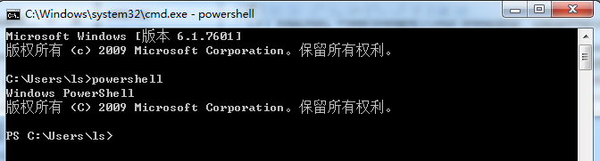
方法二： 开始菜单中输入powershell启动powershell
方法三： 开始菜单----附件----powershell启动
带x86的是32位的，不带的是64位的；带ies的是简单的ide
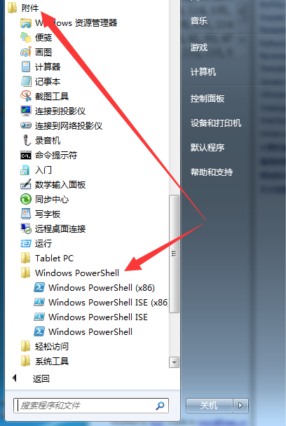
2.2 使用powershell
powershell启动后界面如下
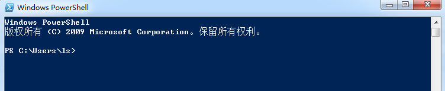
2.1.1 get-help查看帮助
我们一无所知，所以我们输入help试一下，很好，powershell确实支持help
（不过我们前边说过powershell命令是cmdlet格式，help也使用cmdlet格式，help只是get-help的一个别名）
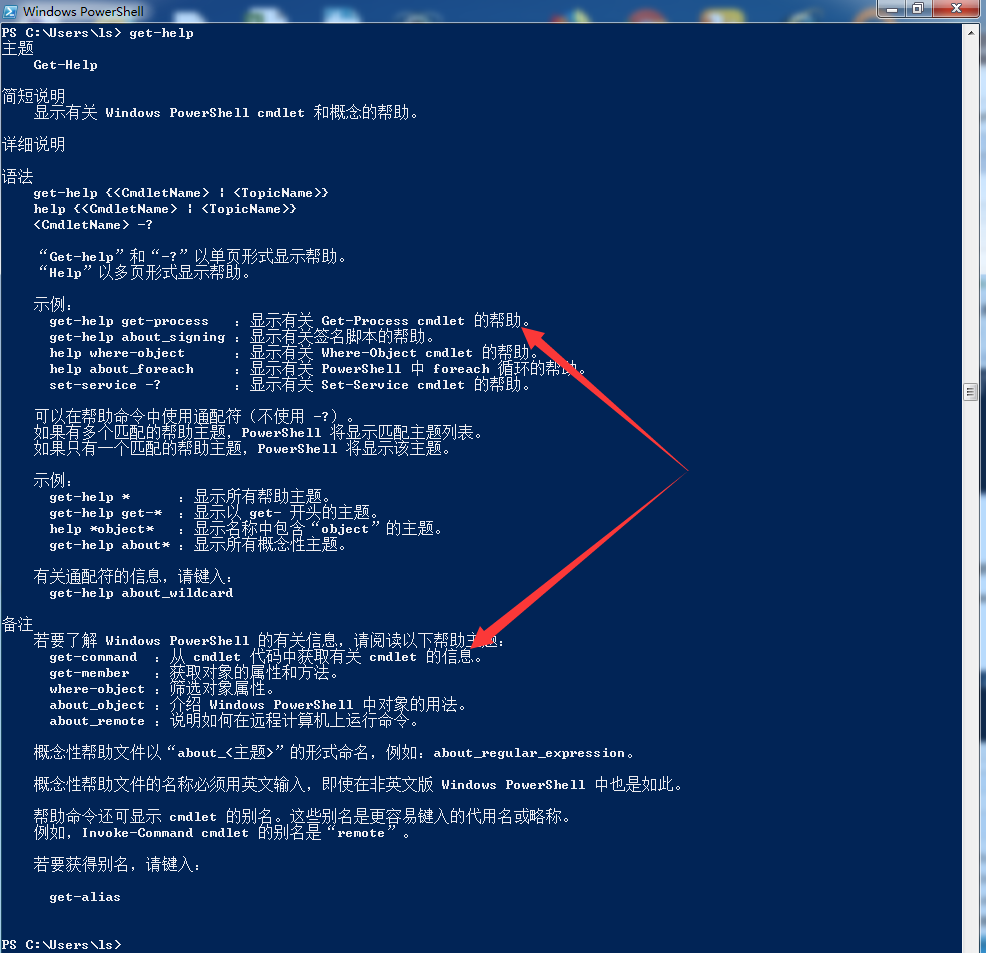
2.2.2 get-command查看有哪些命令
在确定powershell支持get-help之后，首先我们需要知道powershell支持哪些命令，在上图get-help中可以看到可以使用get-command查看powershell支持的命令
CommandType列，表示命令类型，Alias是别名、Cmdlet是powershell格式的命令、Function是函数
Name列，就是命令
Definition列，命令功能的简单描述
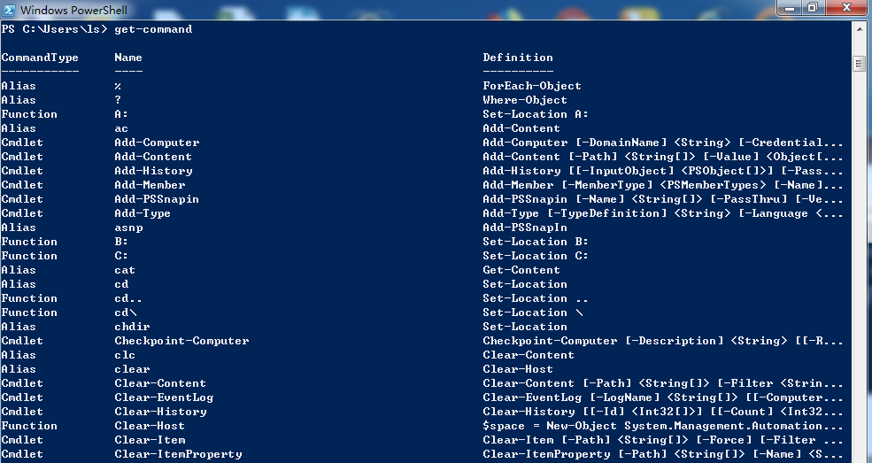
2.2.3 get-command缩小范围
上面的命令太多了，我们需要缩小范围以确定类似ps功能的命令在powershell中是什么（当然我们说过powershell兼容cmd所以可以直接用ps，但这不是我们这里想要的）
查看信息都是get-开头，所以我们猜测查看进程的命令也以get-开头，执行get-command get-*试一下
结果如下图所示，列出了所有get开头的命令，其中我们看到有一个叫get-process的命令，一看就是获取进程信息的
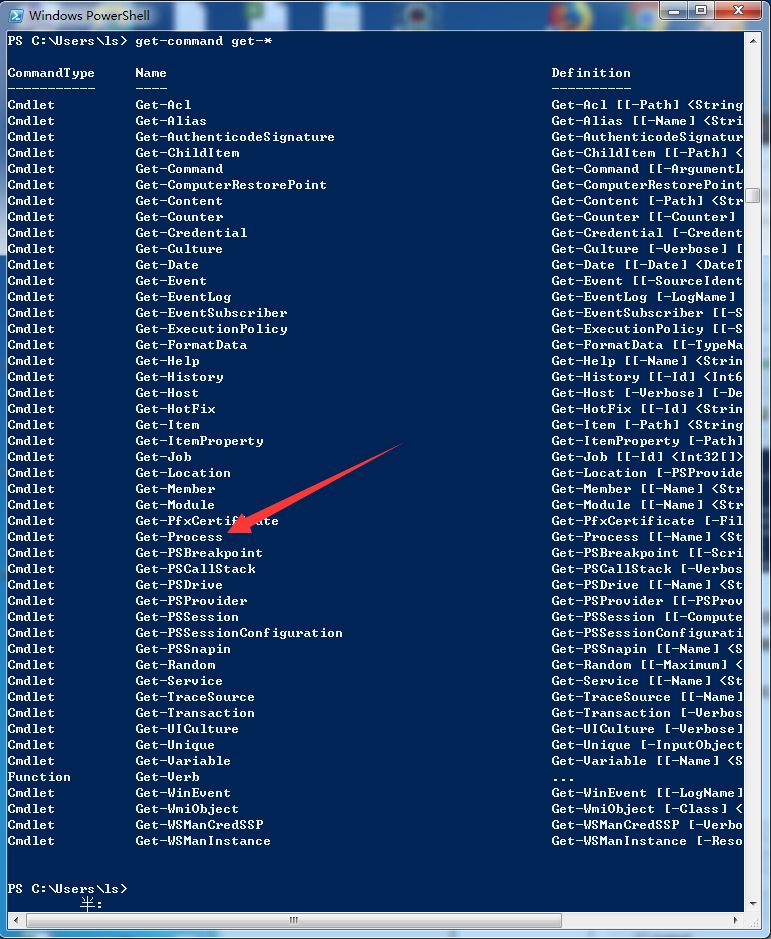
2.2.4 get-process查找进程
我们将命令锁定在了get-process但是我们不知道这个命令怎么用，2.2.1中说可以通过get-help command的形式查看帮助，我们也试一下
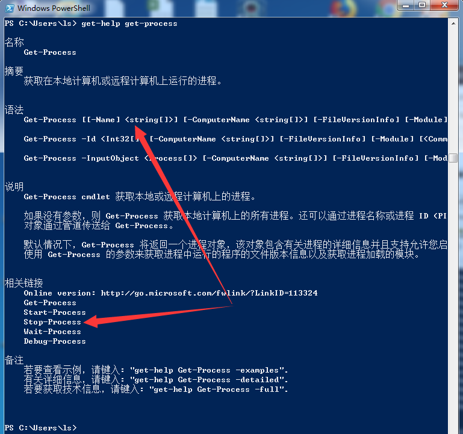
可以看到所有选项都是带中括号的，所以直接执行get-process就可以了
但是可以猜测，没有任何过滤条件返回的肯定是所有进程列表这需要过滤，可以看到-name参数可以过滤进程名，为保险起见我们还加上*号通配符
整个要执行的命令就是：get-process -name *notepad*
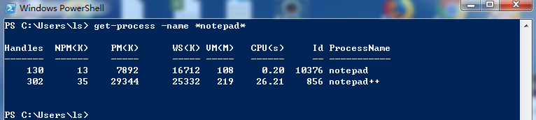
2.2.5 stop-process杀除进程
第一个思路是：在get-help get-process中已看到相关链接中有stop-process，这大概率是杀除进程的命令
第二个思路是：获取进程是get-process，那么杀除进程也大概率是xxx-process
执行：get-command *process
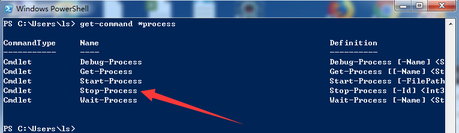
可以看到就5个命令，而其中只有stop-process比较像，一样使用get-help来查看帮助顺便确认是不是
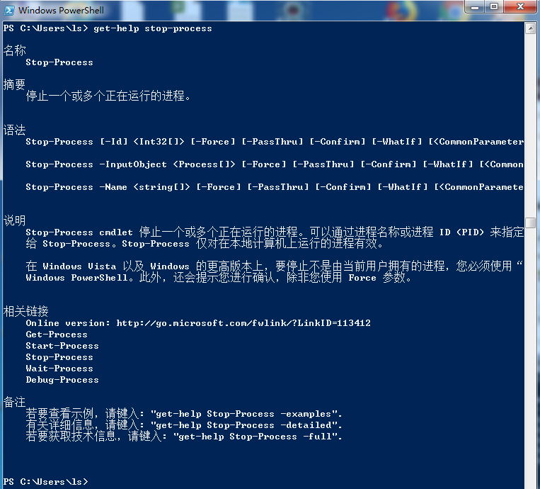
显而易见确实是，而且杀除命令就是：stop-process -id pid
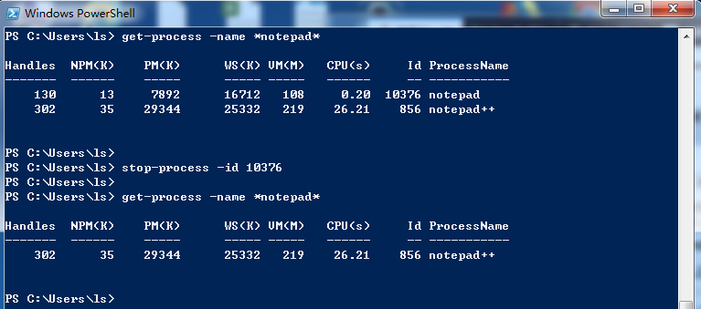